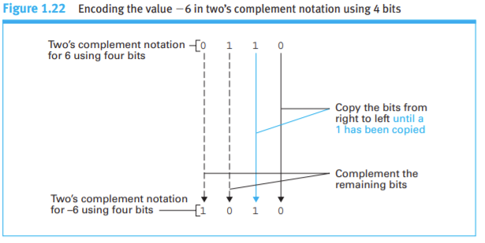
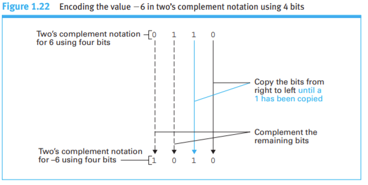

Two's Complement Addition
JavaScript program to add 2 integers demonstrating two's complement.

 

The two's complement for is:
The two's complement for is:
The two's complement binary addition of the 2 numbers is:
The base ten addition of the 2 numbers is: